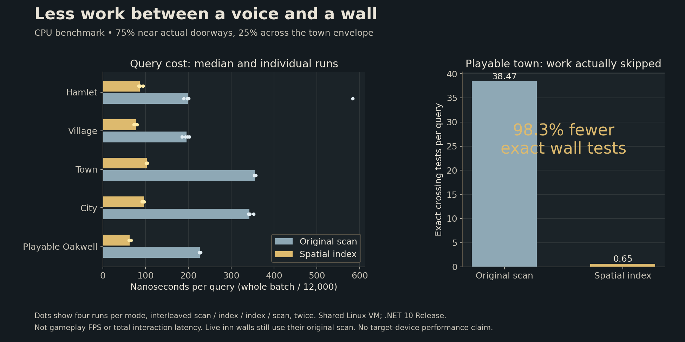

A wall between voices
30 October 2026
A conversation belongs on the same side of a wall as the person speaking. Making that rule cheaper should never make a closed room easier to overhear.
The work behind a nearby voice
Oakwell repeatedly asks whether a wall stands between two points. The question helps decide which passing remarks reach you, whom you can talk to and which nearby objects you can interact with.
The answer used to require walking through the town's building walls and tall boundaries until something blocked the line. Most of those walls were nowhere near the conversation. A short exchange by a doorway still carried the cost of considering distant masonry.
The town now prepares a small spatial index of those fixed wall spans. A query first skips whole groups that cannot meet its line, then asks the original crossing rule about the remaining walls. It shares the existing collision hierarchy rather than introducing another world map.
Keep the gaps, keep the walls
Doorways remain gaps. Low boundaries do not suddenly silence a voice. The inn's live walls still use their original scan, so changing one takes effect immediately. Replacing a town plan replaces its index, even when the town keeps the same name and seed.
Oblique wall spans retain their original scan alongside the index, while extremely tiny geometry uses the complete scan: floating-point rounding can give the historical rule an answer outside ordinary geometric bounds. The usual orthogonal town walls still use the index.
The awkward details matter too. A line ending exactly on a wall, a line running along one and a wall with no length must behave as before. The checks compare both directions separately rather than assuming that reversing a line always has the same answer.
More than three hundred thousand comparisons exercise generated settlement layouts and difficult geometry. Warmed queries create no managed garbage. Separate engine checks exercise the actual town's walls, replacement plans and live inn geometry.
What became cheaper
The measurement gives most queries to real doorways, with the remainder spread across the town's envelope. Each version receives exactly the same questions. The old scan and the index run in alternating order, and the record keeps every sample, including slower ones.
On the playable town's exported layout, the index avoids 98.3 percent of exact wall tests in that workload. Average exact tests fall from about thirty-eight per query to less than one. That leaves more of the town's repeated work out of the way without changing what a wall means.

The graph measures a small CPU operation on a shared machine. It does not establish a frame-rate gain, complete interaction latency or phone performance. This is a quieter improvement: the same boundaries, with less work each time the town needs to ask about them.